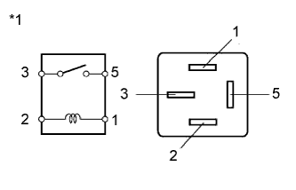

DTC C1751/51 Повреждение обмотки реле компрессора |
| Код DTC | Условие обнаружения DTC | Неисправный участок |
| C1751/51 | Выполняется любое из следующих условий:
|
|
| 1.ВЫПОЛНИТЕ АКТИВНУЮ ДИАГНОСТИКУ С ИСПОЛЬЗОВАНИЕМ ПОРТАТИВНОГО ДИАГНОСТИЧЕСКОГО ПРИБОРА (COMPRESSOR MOTOR RELAY) |
Выключите зажигание.
Подсоедините портативный диагностический прибор к DLC3.
Включите зажигание (IG).
Включите портативный диагностический прибор.
Войдите в следующие меню: Chassis / Air suspension / Active Test.
| Информация на дисплее прибора | Испытываемое устройство | Диапазон регулирования | Замечание по диагностике |
| Compressor Motor Relay | Реле AIR SUS | ON (ВКЛ) или OFF (ВЫКЛ) |
|
| Результат | Следующий шаг |
| NG | А |
| ОК (при поиске неисправностей по таблице признаков неисправностей) | B |
| ОК (при поиске неисправностей по таблице DTC) | C |
|
| ||||
|
| ||||
| А | |
| 2.ПРОВЕРЬТЕ РЕЛЕ УПРАВЛЕНИЯ ПОДВЕСКОЙ (AIR SUS) |
Выключите зажигание.
Извлеките реле AIR SUS из блока реле моторного отсека.
|  |
Измерьте сопротивление в соответствии со значениями, приведенными в таблице ниже.
| Контакты для подключения диагностического прибора | Условие | Заданные условия |
| 3 - 5 | Напряжение аккумуляторной батареи 12 В не подается на контакты 1 и 2 | 10 кОм или более |
| Напряжение аккумуляторной батареи 12 В подается на контакты 1 и 2 | Менее 1 Ом |
| *1 | Реле пневмоподвески AIR SUS |
|
| ||||
| OK | |
| 3.ПРОВЕРЬТЕ ЖГУТ ПРОВОДОВ И РАЗЪЕМ (ЭБУ УПРАВЛЕНИЯ ПОДВЕСКОЙ – РЕЛЕ AIR SUS) |
Отсоедините разъем R19 ЭБУ управления подвеской.
Извлеките реле AIR SUS из блока реле моторного отсека.
Измерьте сопротивление в соответствии со значениями, приведенными в таблице ниже.
| Контакты для подключения диагностического прибора | Условие | Заданные условия |
| R19-22 (RC) - контакт 1 реле AIR SUS блока реле моторного отсека | Всегда | Менее 1 Ом |
| R19-22 (RC) - масса | Всегда | 10 кОм или более |
| Контакт 2 реле AIR SUS блока реле моторного отсека - масса | Всегда | Менее 1 Ом |
|
| ||||
| OK | ||
| ||